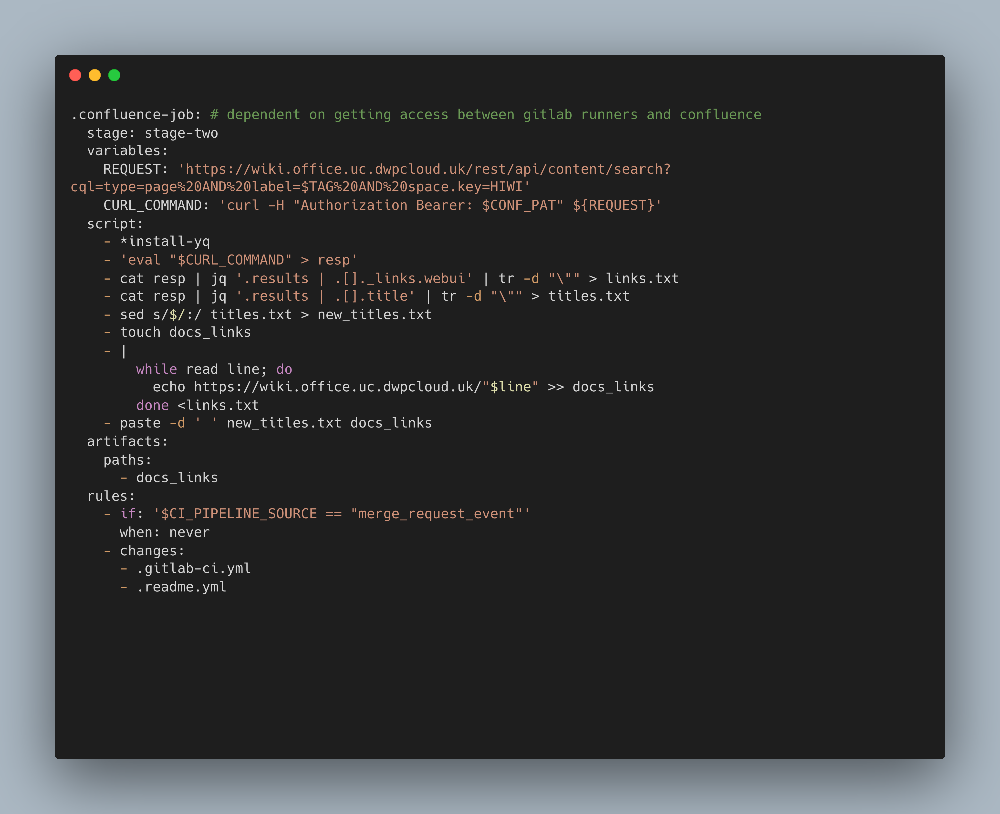

Introduction
In our repositories the READMEs were often not helpful and contained outdated information. Furthermore, no uniform style was applied. My task was to design and implement an automated process that would remedy this issue.
My solution
I decided that I would create a Gitlab CI pipeline to collate information from a number of sources and then create a README and push to the same repository from the Gitlab runner.

Presenting to the team
I had the opportunity to present my solution to the team and I decided the easiest way to get across how it was organised and how it worked was to go through the documentation I had written describing the function of each job and then doing a demonstration of the pipeline. S1 Since the team is all technical people we could have a discussion about the code and my thinking behind the solution. This enabled me to have good technical feedback.